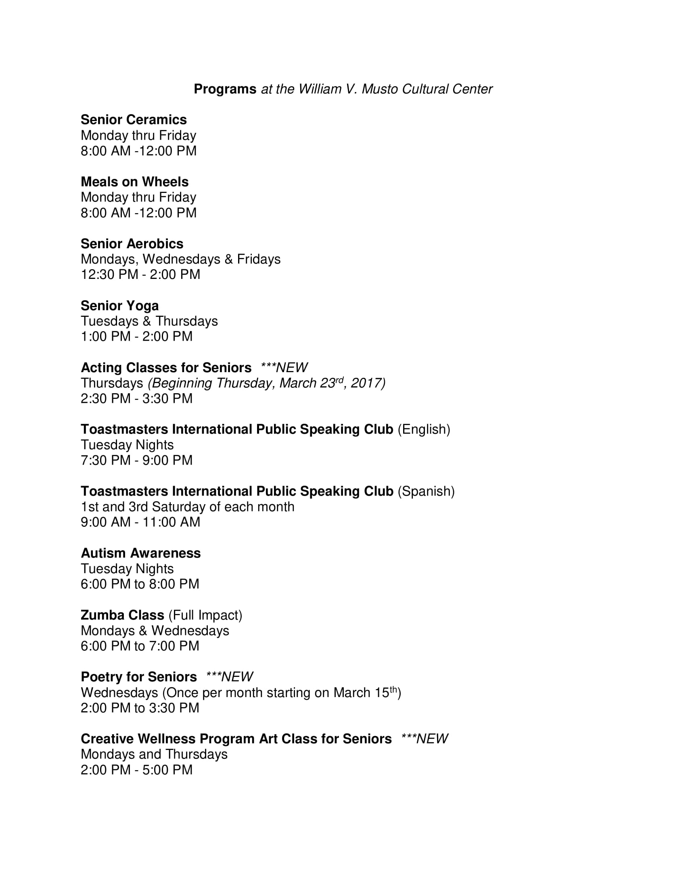
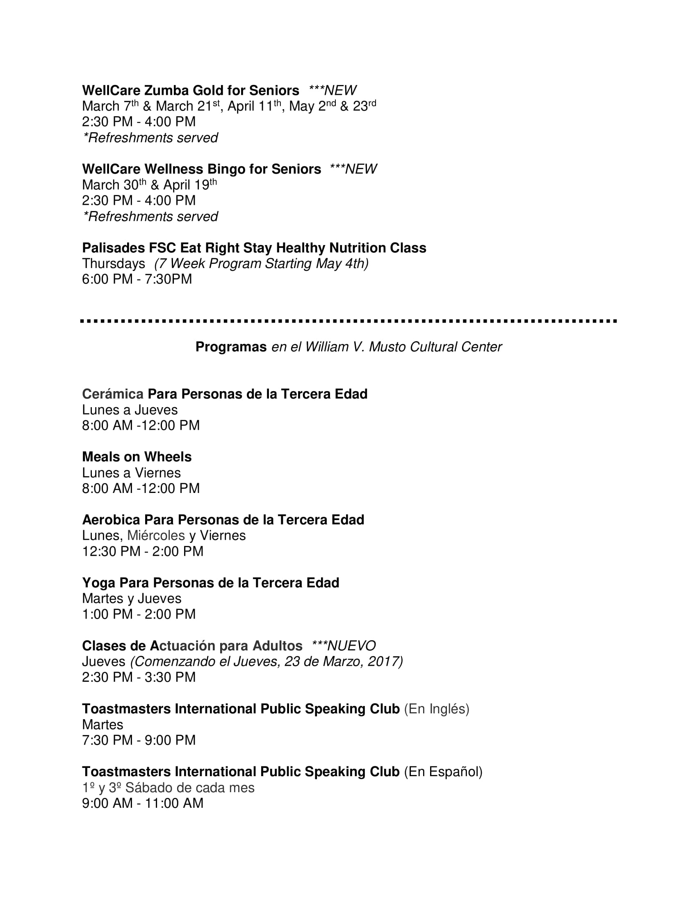
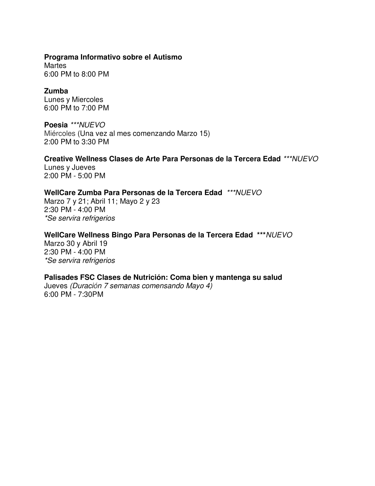

Senior Citizens are offered a full schedule of activities including trips, parties, music, and lectures. The city has a full-time Senior Affairs Director. The Senior Affairs office provides help with a number of problems including transportation to doctors and shopping areas.
Senior Programs at the William V. Musto Cultural Center



Above are the pre-scheduled programs and activities for Senior Citizens located at 420 15th St., Union City